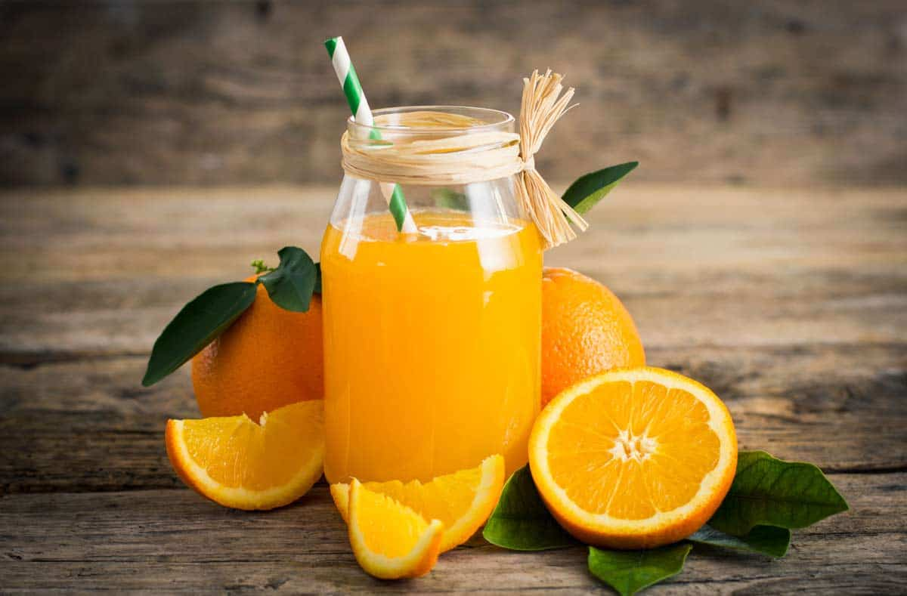
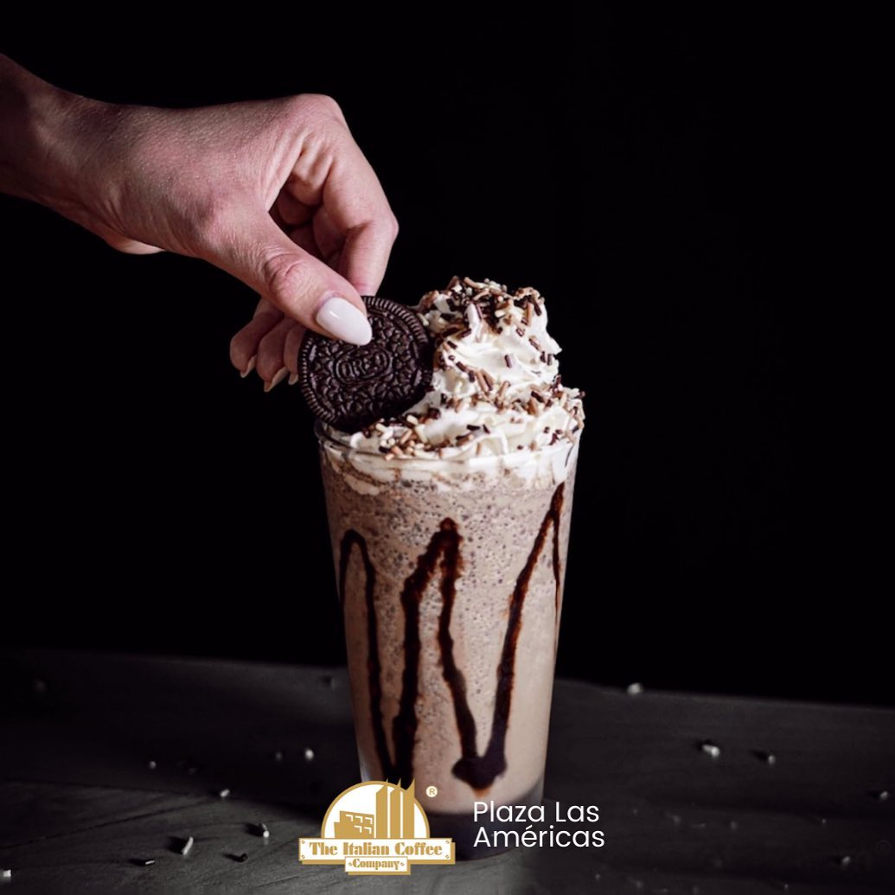
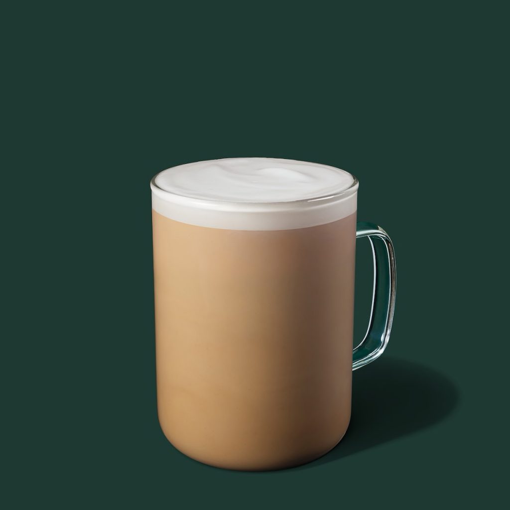

CUATRO BEBIDAS QUE DEBERIAS PROBAR

Luis Tobón
CUATRO BEBIDAS QUE DEBERIAS PROBAR
Luis Tobón
El jugo de naranja o zumo de naranja es un jugo de frutas en forma de líquido obtenido de exprimir el interior de las naranjas, generalmente con un exprimidor. El mayor exportador de jugo de naranja es Brasil, seguido de Estados Unidos. Sus usos culinarios son diversos y participan principalmente como refresco
En México se trata de una bebida refrescante que se prepara normalmente con granos de arroz remojados en agua que después se muelen y se mezclan con agua endulzada; al final se aromatiza con canela. Puede añadirse leche y, ocasionalmente, otros ingredientes.

El Moka "Frioreo" frappé es una especialidad de la casa (italian coffe), que mezcla los sabores del Moka frappé con galleta Oreo triturada para darle un sabor único,
El café latte es el hermano mayor del capuchino, donde todo gira en torno a la espuma. Normalmente, el café latte se prepara con una o dos dosis de expreso (1/3 de la bebida) y 2/3 de leche calentada con vapor, con una pequeña capa (alrededor de 1 cm) de espuma de leche. La textura de un café latte es muy importante, ya que aporta esa clasica apariencia a la bebida.
